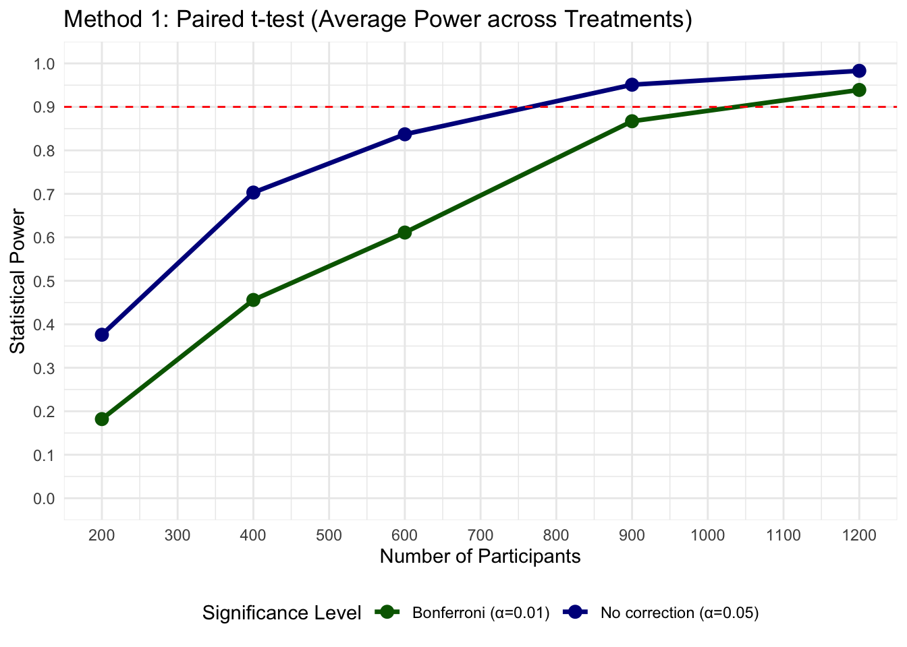
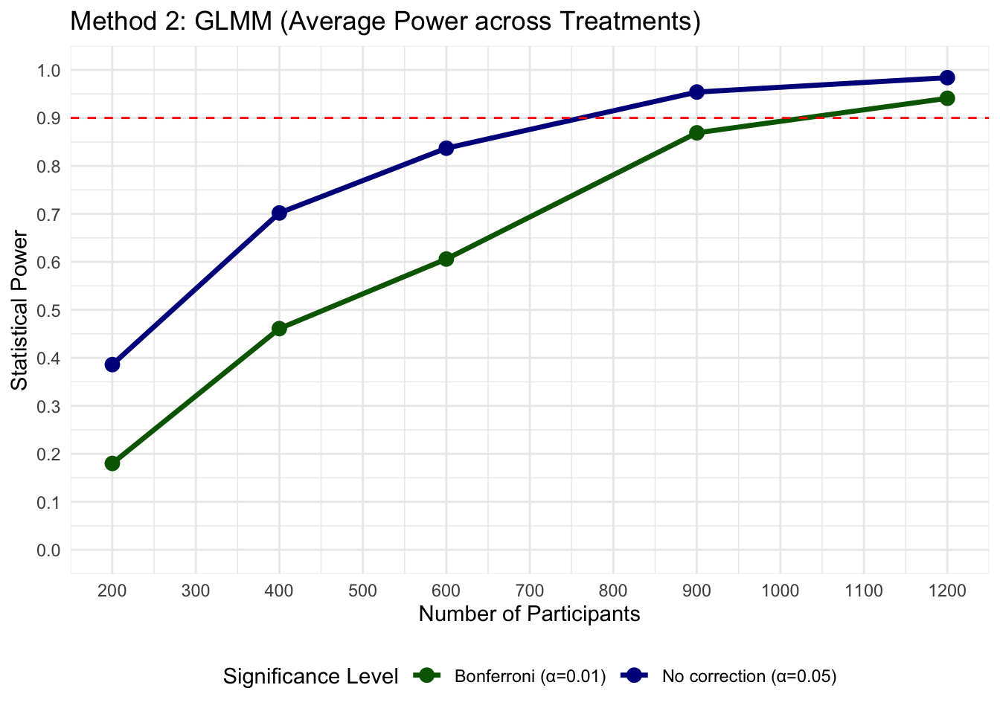
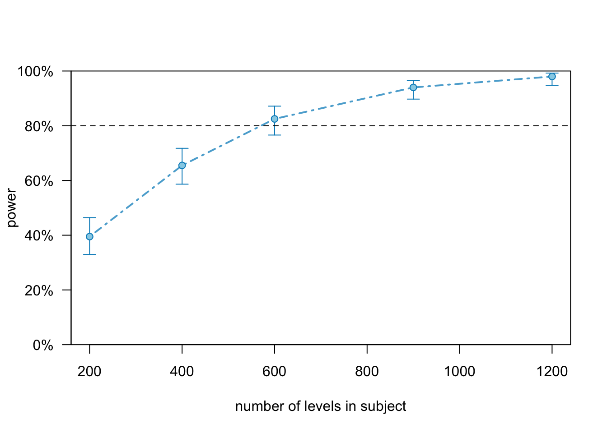
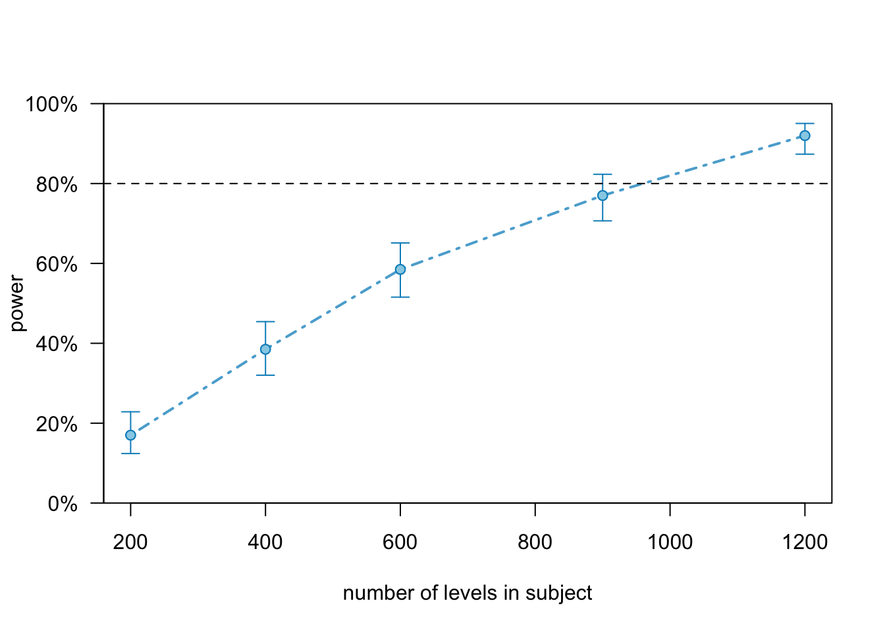

This document presents a power analysis for a within-subjects experiment investigating how different methods of delivering AI explanations affect human-AI collaborative decision-making. The analysis addresses the question:
How many participants do we need to reliably detect a 3 percentage point improvement in investment performance when using alternative AI explanation delivery methods?
1.1 Research Context
While AI can provide valuable decision support, users often fail to engage meaningfully with AI explanations, limiting the potential for complementary human-AI performance. This experiment tests whether alternative explanation delivery methods can promote deeper engagement and better decision-making.
Specifically, we test three interventions designed to encourage more deliberate engagement with AI explanations:
Request: Users must actively click to access the AI recommendation and explanation
Update: Users make an initial decision, then can revise it after seeing the AI’s input
Wait: The explanation is provided after a deliberate delay
The “Explanation” condition (immediate explanation) serves as the control against which we compare the three intervention strategies. The “No AI” and “No Explanation” conditions provide performance benchmarks.
1.2 Design
Within-subjects design: Each participant experiences all 6 conditions in random order, serving as their own control
6 experimental conditions:
No AI (benchmark)
AI without explanation (benchmark)
AI with immediate explanation (control)
Three explanation delivery interventions (request, update, wait)
36 decisions per participant: 6 investment decisions × 6 conditions
Each method handles the repeated-measures structure differently, providing converging evidence for sample size requirements.
1.4 Assumptions
Control Performance: With standard AI recommendations with explanation, participants achieve 75% accuracy
This was calculated from human performance in Germann and Merkle’s (2019) fund manager data
Treatment Effect: Alternative explanation delivery methods provide a 3 percentage point improvement (75% → 78%)
Assumes that promoting engagement leads to better calibration of AI reliance
Large enough to be practically meaningful for investment decisions
Individual Differences: Between-subject standard deviation of 0.177 percentage points
Derived from Germann and Merkle’s (2019) fund manager performance data
Learning Effects: Small practice effect of 1 percentage point per round
Participants may improve slightly through experience with the task
Controlled by randomising condition order across participants
1.5 Statistical Considerations
We have 5 key comparisons, all versus the control (Explanation) condition. With 5 comparisons, we face increased Type I error risk.
Primary analysis: Individual comparisons at α = 0.05
Corrected analysis: Bonferroni correction (α = 0.01) for family-wise error control
Target Power: We aim for 90% statistical power: a 90% chance of detecting true effects when they exist.
Show code
# Load required packageslibrary(tidyverse) # Data manipulation and visualisationlibrary(lme4) # Mixed-effects models (for GLMM approach)library(geepack) # Generalised estimating equationslibrary(knitr) # For table formattinglibrary(kableExtra) # Enhanced table stylinglibrary(simr) # Power analysis for mixed models
Show code
# Set seed for reproducibility - ensures same random data each runset.seed(123)# Global effect size parameters (percentage point increase)PROP_CONTROL <-0.75# Control condition success rate (75%)EFFECT_SIZE <-0.03# 3% increase: 75% → 78%PROP_TREATMENT <- PROP_CONTROL + EFFECT_SIZE # Treatment condition success rate (78%)# Significance levelsALPHA_STANDARD <-0.05ALPHA_BONFERRONI <-0.01# Experimental design parametersN_ROUNDS <-6# 1 control + 5 treatmentsN_DECISIONS <-6# decisions per conditionSUBJECT_SD <-0.177# Subject-level SD for random effects, calculated from Germann and Merkle fund manager dataPRACTICE_EFFECT <-0.01# (0.01 = 1% improvement per round)SAMPLE_SIZES <-c(200, 400, 600, 900, 1200) # Sample sizes to test# Quick mode for testing (set to FALSE for full analysis)quick_mode <-FALSEif (quick_mode) { N_SIMS <-10# Reduce for quick testing} else { N_SIMS <-200# Full analysis}
2 Data simulation
The simulation creates synthetic experimental data based on our design assumptions. Each participant makes 36 binary decisions (correct/incorrect) across 6 conditions, with individual differences and small learning effects included.
Scores: Aggregated correct decisions per condition (for paired t-tests)
Show code
# General simulation function for all methodssimulate_data <-function(n_subjects,p_control = PROP_CONTROL,effect_size = EFFECT_SIZE,n_decisions = N_DECISIONS,n_rounds = N_ROUNDS,subject_sd = SUBJECT_SD,practice_effect = PRACTICE_EFFECT,return_format ="binary") {# Total number of observations n_total <- n_subjects * n_rounds * n_decisions# Set up condition names conditions <-c("control", paste0("treatment", 1:5))# Each subject gets each condition once in random order round_assignments <-replicate(n_subjects, sample(conditions), simplify =FALSE) round_assignments <-unlist(round_assignments)# Create data structure: each row is one decision subject <-rep(rep(1:n_subjects, each = n_rounds), each = n_decisions) round <-rep(rep(1:n_rounds, n_subjects), each = n_decisions) decision <-rep(1:n_decisions, n_subjects * n_rounds) condition <-rep(round_assignments, each = n_decisions)# Generate subject effects once and index them subject_effects <-rep(rnorm(n_subjects, 0, subject_sd), each = n_rounds * n_decisions)# Calculate success probabilities base_prob <- p_control + (condition !="control") * effect_size# Add learning effect (1% improvement per round) prob_with_practice <- base_prob + (round -1) * practice_effect# Convert to logit scale, add individual effects, then back to probability logit_p <-qlogis(prob_with_practice) + subject_effects p <-plogis(logit_p)# Simulate outcomes correct <-rbinom(n_total, size =1, prob = p)# Create data frameif (return_format =="binary") { df <-data.frame(subject =factor(subject),condition =factor(condition, levels = conditions),round =factor(round),decision = decision,correct = correct,is_treatment =as.integer(condition !="control"),stringsAsFactors =FALSE )return(df) } else { # return_format == "scores" subject_condition <-paste(subject, condition, sep ="_") scores <-tapply(correct, subject_condition, sum) keys <-names(scores) subject_vals <-as.integer(sub("_.*", "", keys)) condition_vals <-sub(".*_", "", keys)# CREATE the final dataframe directly (don't reference non-existent scores_df)return(data.frame(subject =factor(subject_vals),condition =factor(condition_vals, levels = conditions),score =as.vector(scores),stringsAsFactors =FALSE )) }}
Rather than simulate data repeatedly during power calculations, we pre-generate all required datasets once. This reduces computation time and ensures identical data across the three analysis methods.
Show code
# Pre-generate all datasets for all sample sizespregenerate_all_datasets <-function(sample_sizes = SAMPLE_SIZES, n_sims = N_SIMS,effect_size = EFFECT_SIZE) { all_datasets <-list()for (n in sample_sizes) { datasets_binary <-list() datasets_scores <-list()for (i in1:n_sims) {# Generate binary format once data_binary <-simulate_data(n, effect_size = effect_size, practice_effect =0,return_format ="binary")# Calculate scores from the same binary data data_scores <- data_binary %>%group_by(subject, condition) %>%summarise(score =sum(correct), .groups ='drop') %>%arrange(subject, condition) datasets_binary[[i]] <- data_binary datasets_scores[[i]] <- data_scores } all_datasets[[as.character(n)]] <-list(binary = datasets_binary,scores = datasets_scores ) } return(all_datasets)}
Show code
# Pre-generate all datasets once for all methodsall_datasets <-pregenerate_all_datasets()
3 Paired t-test on Scores
This method aggregates each participant’s decisions into scores per condition (0-6 correct), then compares treatment scores to control scores using paired t-tests. Simple and robust, but loses information by aggregating binary decisions.
Show code
# Analysis function that returns all p-valuesanalyse_paired <-function(data) {# Extract control scores for each participant control_data <- data %>%filter(condition =="control") %>%select(subject, control_score = score)# Join treatment scores with their control scores treatment_data <- data %>%filter(condition !="control") %>%left_join(control_data, by ="subject")# Run 5 separate paired t-tests (one per treatment vs control) p_values_df <- treatment_data %>%group_by(condition) %>%summarise(p_value = {if (n() >1&&sd(score - control_score) >0) {t.test(score, control_score, paired =TRUE)$p.value } else {NA } },.groups ='drop' )return(p_values_df)}# Power calculation functioncalculate_power_paired <-function(datasets_scores) { n_sims <-length(datasets_scores)# Track successes for different tests treatment_significant_std <-rep(0, 5) treatment_significant_bonf <-rep(0, 5)# Run analysis on each simulated datasetfor (i in1:n_sims) { data <- datasets_scores[[i]] p_values_df <-analyse_paired(data)# Test each treatment separatelyfor (j in1:5) { treatment_name <-paste0("treatment", j) p_val <- p_values_df$p_value[p_values_df$condition == treatment_name]if (length(p_val) >0&&!is.na(p_val)) {if (p_val < ALPHA_STANDARD) { treatment_significant_std[j] <- treatment_significant_std[j] +1 }if (p_val < ALPHA_BONFERRONI) { treatment_significant_bonf[j] <- treatment_significant_bonf[j] +1 } } } }# Calculate power as proportion of significant results power_treatment_std <- treatment_significant_std / n_sims power_treatment_bonf <- treatment_significant_bonf / n_simsreturn(list(power_average_std =mean(power_treatment_std), # Average across 5 treatmentspower_average_bonf =mean(power_treatment_bonf),power_detail_std = power_treatment_std, # Per-treatment detailspower_detail_bonf = power_treatment_bonf ))}
Show code
# Calculate power for each sample sizepowers_average_std <-numeric(length(SAMPLE_SIZES))powers_average_bonf <-numeric(length(SAMPLE_SIZES))for (i inseq_along(SAMPLE_SIZES)) { n <- SAMPLE_SIZES[i]# Use pre-generated datasets datasets_scores <- all_datasets[[as.character(n)]]$scores# Calculate power for this sample size power_results <-calculate_power_paired(datasets_scores) powers_average_std[i] <- power_results$power_average_std powers_average_bonf[i] <- power_results$power_average_bonf}
Show code
# Create data frame with results for all tested sample sizes for Method 1paired_results <-data.frame(Sample_Size = SAMPLE_SIZES,Power_Standard =round(powers_average_std, 3),Power_Bonferroni =round(powers_average_bonf, 3))# Display results in a tablekable(paired_results, caption ="Power by Sample Size (Average across 5 treatments)",col.names =c("Sample Size", "α=0.05","α=0.01"),align =c("l", "c", "c")) %>%kable_styling(bootstrap_options =c("striped", "hover", "condensed"))
Power by Sample Size (Average across 5 treatments)
Sample Size
α=0.05
α=0.01
200
0.376
0.182
400
0.703
0.456
600
0.837
0.611
900
0.951
0.867
1200
0.983
0.939
Show code
# Create comparison plot with the power curvespower_data <-data.frame(n =rep(SAMPLE_SIZES, 2),power =c(powers_average_std, powers_average_bonf),correction =rep(c("No correction (α=0.05)", "Bonferroni (α=0.01)"), each =length(SAMPLE_SIZES)))# Plot the power curvesggplot(power_data, aes(x = n, y = power, colour = correction)) +geom_line(size =1.2) +geom_point(size =3) +geom_hline(yintercept =0.90, linetype ="dashed", colour ="red") +scale_y_continuous(breaks =seq(0, 1, 0.1), limits =c(0, 1)) +scale_x_continuous(breaks =seq(0, 1200, 100)) +scale_colour_manual(values =c("No correction (α=0.05)"="darkblue","Bonferroni (α=0.01)"="darkgreen" )) +labs(x ="Number of Participants",y ="Statistical Power",title ="Method 1: Paired t-test (Average Power across Treatments)",colour ="Significance Level") +theme_minimal() +theme(legend.position ="bottom")

4 Mixed Effects Models (GLMM)
This method models individual binary decisions using logistic regression with random participant effects. More statistically efficient than Method 1 but requires distributional assumptions and can have convergence issues.
Show code
# Fit GLMM and extract p-values for treatment vs control comparisonsanalyse_glmm <-function(data, alpha =0.05) {tryCatch({# Ensure factor levels are consistent (control = reference level) data$condition <-factor(data$condition, levels =c("control", paste0("treatment", 1:5)))# Fit logistic mixed model: individual decisions ~ conditions + learning + (random intercept | participant)suppressWarnings({ model <-glmer(correct ~ condition + round + (1|subject), data = data, family = binomial,control =glmerControl(optimizer ="bobyqa", optCtrl =list(maxfun =20000))) })# If singular, the model is already as simple as reasonable for this designif (isSingular(model)) {warning("Model is singular - consider checking data or reducing complexity") }# Extract coefficients coef_summary <-summary(model)$coefficients# Find treatment coefficients (control is reference level) treatment_rows <-grep("conditiontreatment", rownames(coef_summary))if (length(treatment_rows) ==0) return(NA)# Extract p-values for each treatment vs control comparison p_values <- coef_summary[treatment_rows, "Pr(>|z|)"]names(p_values) <-paste0("treatment", 1:5)return(p_values) }, error =function(e) {# Return NA if model fails to fitreturn(rep(NA,5)) })}# Calculate power for GLMM across multiple simulated datasetscalculate_power_glmm <-function(datasets_binary) { n_sims <-length(datasets_binary)# Count significant results for each treatment treatment_significant_std <-rep(0, 5) treatment_significant_bonf <-rep(0, 5) valid_simulations <-0for (i in1:n_sims) { data <- datasets_binary[[i]] p_vals <-analyse_glmm(data)# Only count simulations where model convergedif (!is.na(p_vals[1])) { valid_simulations <- valid_simulations +1# Check significance for each treatmentfor (j in1:5) {if (!is.na(p_vals[j])) {if (p_vals[j] < ALPHA_STANDARD) { treatment_significant_std[j] <- treatment_significant_std[j] +1 }if (p_vals[j] < ALPHA_BONFERRONI) { treatment_significant_bonf[j] <- treatment_significant_bonf[j] +1 } } } } }# Return NA if no models convergedif (valid_simulations ==0) {return(list(power_average_std =NA, power_average_bonf =NA, power_detail_std =NA, power_detail_bonf =NA)) }# Calculate power as proportion of significant results (among valid simulations)return(list(power_average_std =mean(treatment_significant_std / valid_simulations),power_average_bonf =mean(treatment_significant_bonf / valid_simulations),power_detail_std = treatment_significant_std / valid_simulations,power_detail_bonf = treatment_significant_bonf / valid_simulations ))}
Show code
# Initialize vectors to store resultsglmm_standard <-numeric(length(SAMPLE_SIZES))glmm_bonferroni <-numeric(length(SAMPLE_SIZES))for (i inseq_along(SAMPLE_SIZES)) { n <- SAMPLE_SIZES[i]# Use pre-generated binary datasets datasets_binary <- all_datasets[[as.character(n)]]$binary# Calculate power for this sample size power_results <-calculate_power_glmm(datasets_binary) glmm_standard[i] <- power_results$power_average_std glmm_bonferroni[i] <- power_results$power_average_bonf}
Show code
# Create results data frameglmm_results <-data.frame(Sample_Size = SAMPLE_SIZES,Power_Standard =round(glmm_standard, 3),Power_Bonferroni =round(glmm_bonferroni, 3))# Create a summary table for GLMM resultskable(glmm_results, caption ="Power estimates using GLMM",col.names =c("Sample Size", "α=0.05","α=0.01"),align =c("l", "c", "c")) %>%kable_styling(bootstrap_options =c("striped", "hover", "condensed") )
Power estimates using GLMM
Sample Size
α=0.05
α=0.01
200
0.386
0.180
400
0.702
0.461
600
0.837
0.606
900
0.954
0.869
1200
0.984
0.941
Show code
# Prepare data for plotting GLMM power curvespower_data_glmm <-data.frame(n =rep(SAMPLE_SIZES, 2),power =c(glmm_standard, glmm_bonferroni),correction =rep(c("No correction (α=0.05)", "Bonferroni (α=0.01)"), each =length(SAMPLE_SIZES)))# Plot GLMM power curves with 90% target lineggplot(power_data_glmm, aes(x = n, y = power, colour = correction)) +geom_line(size =1.2) +geom_point(size =3) +geom_hline(yintercept =0.90, linetype ="dashed", colour ="red") +scale_y_continuous(breaks =seq(0, 1, 0.1), limits =c(0, 1)) +scale_x_continuous(breaks =seq(0, 1200, 100)) +scale_colour_manual(values =c("No correction (α=0.05)"="darkblue","Bonferroni (α=0.01)"="darkgreen" )) +labs(x ="Number of Participants",y ="Statistical Power",title ="Method 2: GLMM (Average Power across Treatments)",colour ="Significance Level") +theme_minimal() +theme(legend.position ="bottom")

4.1 Validation with simr
The simr package provides an independent validation of our GLMM power estimates. It fits a template model and systematically varies sample size to generate power curves.
First, we need to create a base model using the simulated data.
Show code
# Create the base model as a templateinitial_n <-100initial_data_glmm <-simulate_data(initial_n) %>%mutate(round =factor(round))model_formula <- correct ~ condition + round + (1|subject)base_model <-glmer( model_formula,data = initial_data_glmm,family = binomial,control =glmerControl(optimizer ="bobyqa", optCtrl =list(maxfun =20000)))# Extend the model to the maximum desired sample sizeglmm_extended <-extend(base_model, along ="subject", n =1200)# Set the model parameterscurrent_fixef <-fixef(glmm_extended)current_fixef["(Intercept)"] <-qlogis(PROP_CONTROL)target_log_or <-qlogis(PROP_TREATMENT) -qlogis(PROP_CONTROL)treatment_coef_names <-names(current_fixef)[startsWith(names(current_fixef), "conditiontreatment")]current_fixef[treatment_coef_names] <- target_log_orfixef(glmm_extended) <- current_fixef# Set the random effectsVarCorr(glmm_extended)$subject[1] <- SUBJECT_SD^2# Test for a single treatment comparisoncomparison_test <-fixed("conditiontreatment1", "z")
We then extend this model to simulate the power curve across a range of sample sizes.
Show code
# Calculate power curve for standard alpha (0.05)power_curve_standard <-powerCurve( glmm_extended,test = comparison_test,along ="subject",breaks = SAMPLE_SIZES,nsim = N_SIMS,alpha = ALPHA_STANDARD,progress =FALSE)# Calculate power curve for Bonferroni alpha (0.01)power_curve_bonferroni <-powerCurve( glmm_extended,test = comparison_test,along ="subject",breaks = SAMPLE_SIZES,nsim = N_SIMS,alpha = ALPHA_BONFERRONI,progress =FALSE)
We then plot the power curve to visualize how the power changes with sample size.
Show code
# Plot both power curvescat("Power curve with standard alpha (0.05):\n")
Power curve with standard alpha (0.05):
Show code
plot(power_curve_standard)

Show code
cat("Power curve with Bonferroni alpha (0.01):\n")
Power curve with Bonferroni alpha (0.01):
Show code
plot(power_curve_bonferroni)

The following code extracts the power values from the simr power curve and formats them into a summary table.
GEE provides a robust alternative to GLMM that estimates population-level effects while accounting for within-subject correlation. More robust to model assumptions than GLMM but potentially less efficient.
Show code
# Fit GEE model and extract p-values for treatment vs control comparisons analyse_gee <-function(data, alpha =0.05) {tryCatch({ suppressWarnings({# Fit GEE model: exchangeable correlation structure assumes equal correlation between decisions within participants model <-geeglm(correct ~ condition + round, id = subject, # Clustering variabledata = data, family = binomial,corstr ="exchangeable"# Within-subject correlation structure ) })# Extract coefficients coef_summary <-summary(model)$coefficients# Find treatment coefficients (control is reference level) treatment_rows <-grep("conditiontreatment", rownames(coef_summary))if (length(treatment_rows) ==0) return(rep(NA, 5))# Extract p-values for each treatment vs control comparison p_values <- coef_summary[treatment_rows, "Pr(>|W|)"]names(p_values) <-paste0("treatment", 1:5)# Return all p-values (for consistency with other methods)return(p_values) }, error =function(e) {# Return NA if model fails to fitreturn(rep(NA, 5)) })}# Calculate power across multiple simulated datasetscalculate_power_gee <-function(datasets_binary) { n_sims <-length(datasets_binary)# Initialize counters treatment_significant_std <-rep(0, 5) treatment_significant_bonf <-rep(0, 5) valid_simulations <-0for (i in1:n_sims) { data <- datasets_binary[[i]] p_vals <-analyse_gee(data)# Only count simulations where model converged (same logic as GLMM)if (!all(is.na(p_vals))) { valid_simulations <- valid_simulations +1# Check significance for each treatmentfor (j in1:5) {if (!is.na(p_vals[j])) {if (p_vals[j] < ALPHA_STANDARD) { treatment_significant_std[j] <- treatment_significant_std[j] +1 }if (p_vals[j] < ALPHA_BONFERRONI) { treatment_significant_bonf[j] <- treatment_significant_bonf[j] +1 } } } } }# Return NA if no models convergedif (valid_simulations ==0) {return(list(power_average_std =NA, power_average_bonf =NA)) }# Calculate power as proportion of significant results (among valid simulations)return(list(power_average_std =mean(treatment_significant_std / valid_simulations),power_average_bonf =mean(treatment_significant_bonf / valid_simulations) ))}
Show code
# GEE power calculation loopgee_power_std <-numeric(length(SAMPLE_SIZES))gee_power_bonf <-numeric(length(SAMPLE_SIZES))for (i inseq_along(SAMPLE_SIZES)) { n <- SAMPLE_SIZES[i]# Use pre-generated datasets datasets_binary <- all_datasets[[as.character(n)]]$binary# Calculate power for this sample size power_results <-calculate_power_gee(datasets_binary) gee_power_std[i] <- power_results$power_average_std gee_power_bonf[i] <- power_results$power_average_bonf}